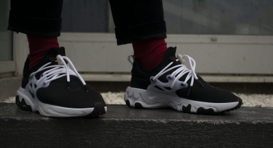
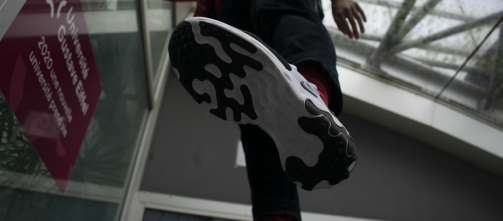
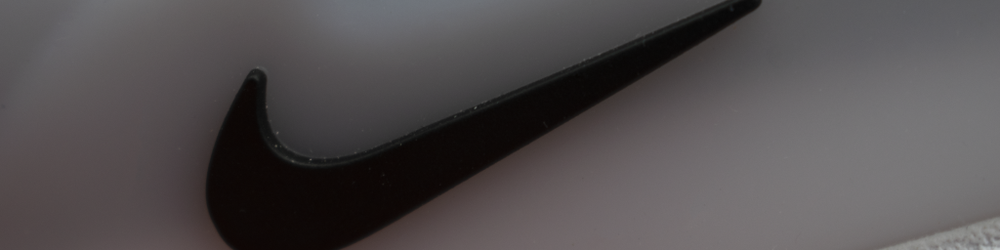
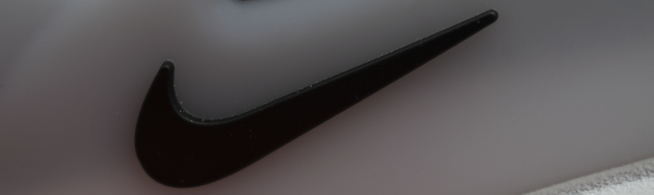
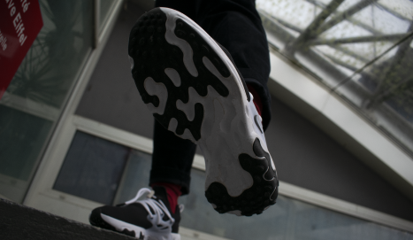
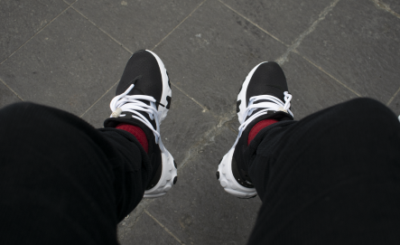

Shoes Shoot est un projet de shooting photo dans le cadre du cours de pratique de la photographie. Il est porté sur le thème de la chaussure Nike presto react.



Shoes Shoot

Shoes shoot est un travail de composition, afin d’avoir une esthétique cohérente et d’apporter différents angles de vue de la chaussure. C'est aussi un travail de retouche photo à l’aide du logiciel Lightroom afin de rendre les photos plus homogènes et du logiciel Photoshop afin de rendre l’affiche de l’université rouge pour l’accorder aux chaussettes et garder l’harmonie des couleurs.


